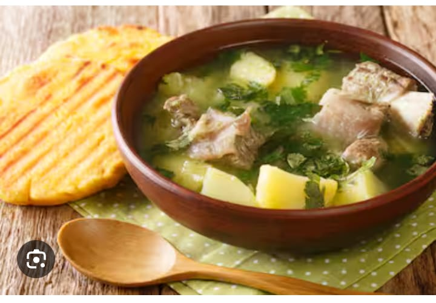

Tamal de pipian Cali
Servicio de comida a domicilio en cali,
escribenos a Whatsapp.
Venta de deliciosos tamales de pipian,empanadas de pipian, fiambre valluno, calentao de frijoles y caldo de costilla; ven y visitanos en el Km 14 via al mar, ¡Te esperamos !
Visitanos en : Km 14 via al mar Todos los Viernes, sabados y domingos
Nuestros productos
Tamal de pipian
el tamal es un alimento nutritivo
Empanadas de pipian
Las empanas son ricas y nutritivas
Fiambre Valluno
el fiambre es un embuelto de comida
calentao de frijoles
el calentao es un revuelto de frijoles con arros
Caldo de costilla
el caldod e costilla se hace con costillas de vaca

En Colombia, en la región de Popayán, capital del departamento del Cauca, consiste en un guiso espeso compuesto por un puré elaborado a base de una variedad local de papas llamadas coloquialmente amarillas o criollas, y aderezado con maní tostado y molido, ajo, tomate, cebolla y achiote